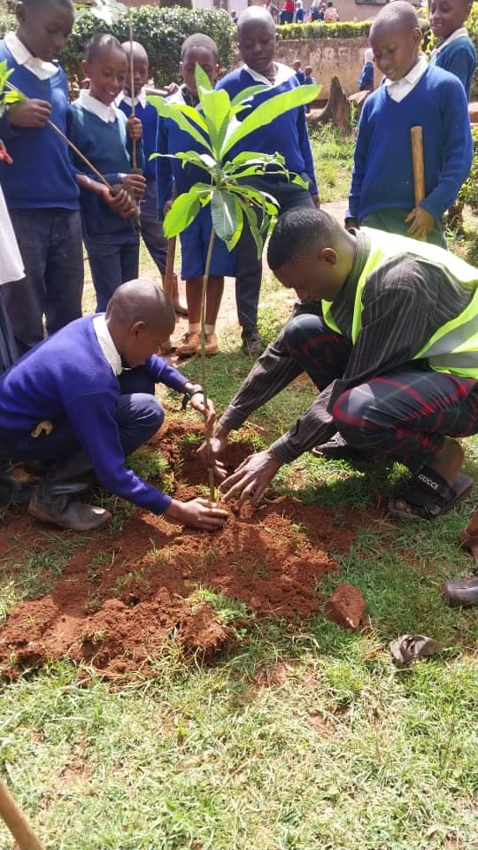
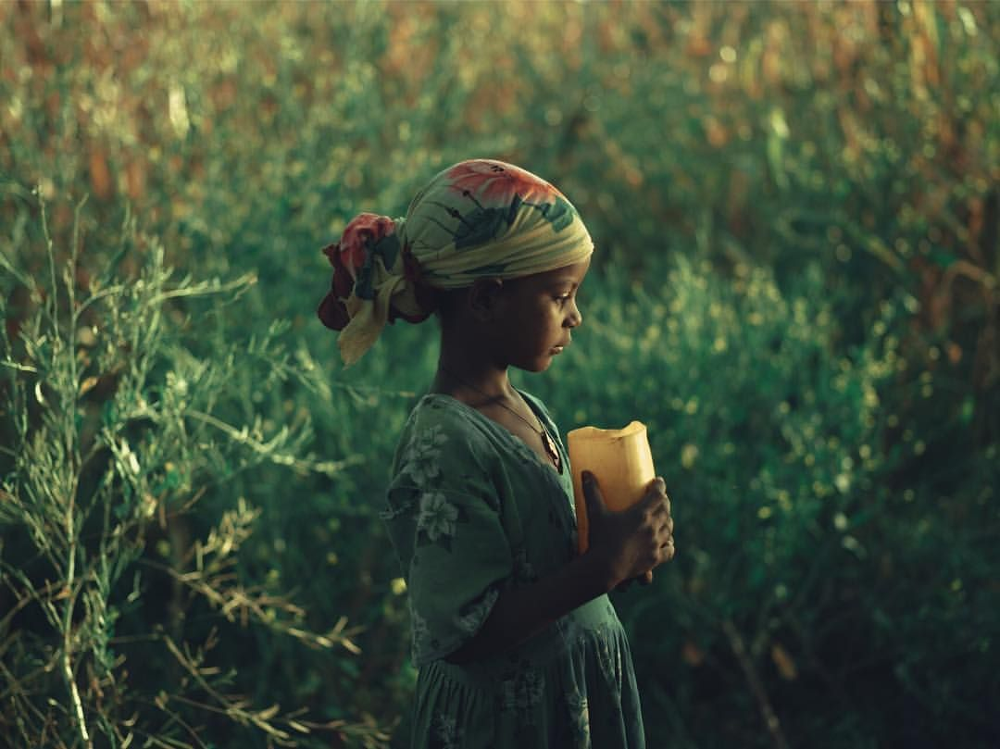
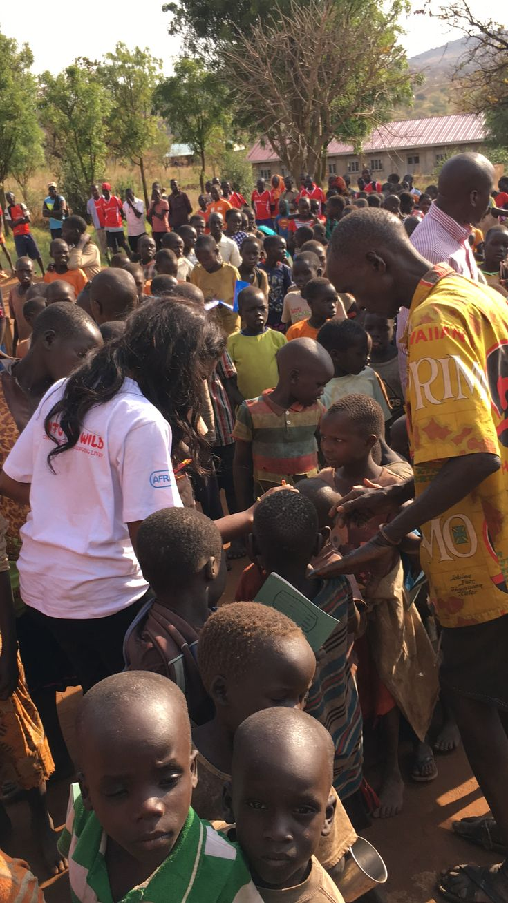
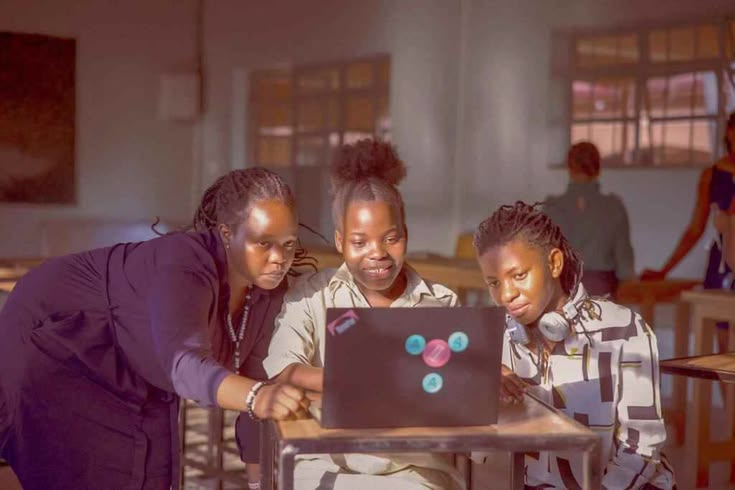
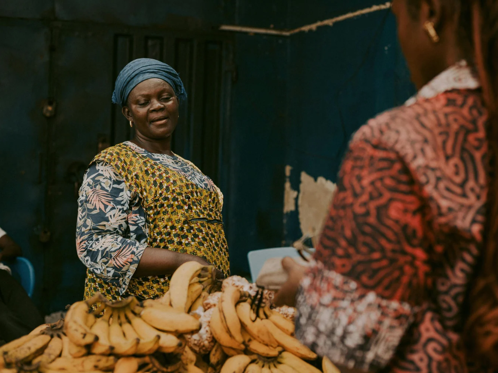

Environmental Sustainability & Climate Action
A good fit if you care about
Environmental education, school greening, biodiversity, climate awareness and practical sustainability.
Read about our causes
Leafspire is a young, youth-led initiative, and there is more than one way to be part of it. You can offer ideas, skills, time, collaboration or support. You do not need to have it all figured out before you reach out.
Volunteering is one of them, not the only one. Pick the one that fits your interests, skills and capacity, and tell us where you would like to start.

If you have time, knowledge, creativity or a practical skill, we would like to hear what you could bring. Areas where people might contribute include:
These are areas of interest, not open vacancies. We are not running a formal recruitment round, so tell us how you would like to contribute and we can talk about what might fit as our activities develop.
Share your interest
Community change often begins when someone notices a local need and organises around a practical idea. If that is you, we would like to talk it through. It might be:
Sharing an idea starts a conversation. Leafspire does not currently run local chapters or a grants programme, and we cannot promise funding for proposals. We will be honest about what we can and cannot do.
Share your ideaOur Green Schools Initiative is a proposed flagship direction, with an initial pilot focus in Trans Nzoia County, subject to partnerships and available resources. No schools are enrolled yet, so this is a chance to help shape it from the start.
If you teach, lead a youth group or work with a community, we would like to hear what would suit your setting.
Organisations, institutions, businesses, educators and community groups are welcome to explore working with us on:
We have no signed partnership agreements to announce, and not every enquiry will lead to a formal agreement. We would still like to talk.
Explore a partnershipYou can support Leafspire through financial contributions, material support, sharing our work and helping mobilise resources where appropriate arrangements exist.
Leafspire is still building its capacity. Support is intended to help advance our mission and future activities, including the programmes we are developing.
Go to the Donate pageEverything we do sits within three connected areas. Start with the one closest to your interests.

A good fit if you care about
Environmental education, school greening, biodiversity, climate awareness and practical sustainability.
Read about our causesA good fit if you care about
Youth voice, leadership, volunteering, community initiatives and meaningful participation in decisions.
See ways to contribute
A good fit if you care about
Social inclusion, wellbeing awareness, supportive activities and stronger relationships in a community. This is about awareness and connection; Leafspire does not offer clinical mental health services.
Tell us your interestA first conversation is a way to find out whether there is a good match. Depending on who you are, it could cover:
Environmental learning, school greening and student leadership, and how these could take shape in your school, including through the proposed Green Schools Initiative.
Local activities, shared spaces and ideas that bring people together, and where young people could take the lead.
Where our interests overlap, whether that is expertise, research, resources, digital skills or help reaching schools and communities.
Leafspire is an unregistered, youth-led initiative at an early stage. We will be open about our capacity and about what we are able to commit to.
You do not need a finished plan, a title or a perfect proposal. Write to us as you are and we will take it from there.
Leafspire is small and youth-led, so replies may take a little time. We read every message.
You are now part of our community. Expect updates on programmes, events and stories.